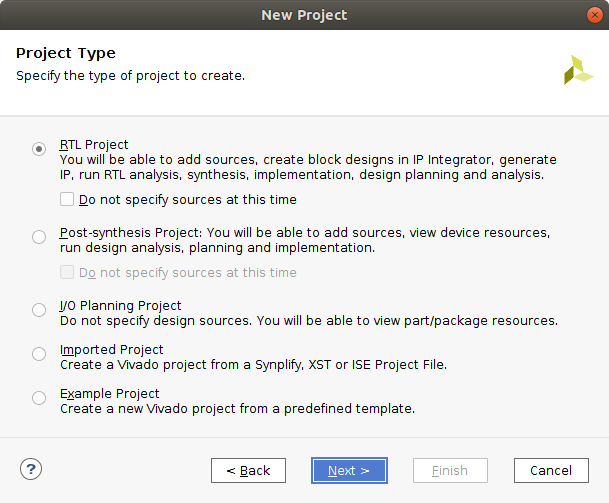
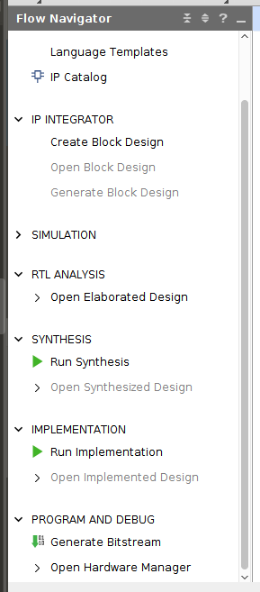

Vivado -> TMR -> Vivado¶
Uploading the Verilog HDL into Vivado¶
The first step is to create an RTL project.
Add simpleCounter.sv to the project.
Download: simpleCounter.sv
Getting the Netlist from Vivado¶
After adding the simpleCounter.sv file to your project, go to the “Flow Navigator” window on the left hand side of the screen, and click on “Run Synthesis.”
Exporting the Netlist¶
Once synthesis has been run expand the “Open Synthesized Design” tab under the “Synthesis” section, and click on the “Schematic” option.
To Export the Netlist click on file in the upper left, go down to Export, then click on Export Netlist.
A window pops up with the option to export EDIF and Verilog Netlists. Select the desired file format and file destination.

- If downloading an EDIF file change the file type from .edn to .edf
Using the tcl command line¶
- To export the netlist using the tcl command line in Vivado type write_edif simpleCounter.edf or write_verilog simpleCounter.v
Triplicating the design - SpyDrNet TMR¶
If using the .edf file, the following code runs the netlist through SpyDrNet TMR.
import spydrnet as sdn
from spydrnet.uniquify import uniquify
from spydrnet_tmr.support_files.vendor_names import XILINX
from spydrnet_tmr.apply_tmr_to_netlist import apply_tmr_to_netlist
# Parse in the downloaded .edf netlist
netlist = sdn.parse("simpleCounter.edf")
# Makes all instances unique in the netlist
uniquify(netlist)
# Gets all of the hinstances in the design but leaves out VCC GND and IBUF as those should not be triplicated
hinstances_to_replicate = list(
netlist.get_hinstances(
recursive=True, filter=lambda x: x.item.reference.is_leaf() is True
and "VCC" not in x.name
and "GND" not in x.name
and "ibuf" not in x.name.lower()
and "IBUF" not in x.item.reference.name ))
# Gets all of the OUT hports in the design
hports_to_replicate = list(netlist.get_hports(filter=lambda x: x.item.direction is sdn.OUT))
valid_voter_point_dict = dict()
valid_voter_point_dict["after_ff"] = [
*hinstances_to_replicate,
*hports_to_replicate,
]
# Triplicates the design and inserts the voters
apply_tmr_to_netlist(
netlist,
XILINX,
hinstances_and_hports_to_replicate=[
*hinstances_to_replicate,
*hports_to_replicate,
],
valid_voter_point_dict=valid_voter_point_dict,
)
# Compose the triplicated netlist
netlist.compose("simpleCounter_tmr.edf")
Download: edf_tmr_script.py
If using the .v file the following code can be downloaded to triplicate the design
Note: To be able to run the design through Spydrnet TMR any instances, ports, or wires that have a as the first character and a space as the last character need to have them removed before replication and then replaced after triplication, but before composing.
Download: verilog_tmr_script.py
SpyDrNet TMR to Vivado¶
Create new project in Vivado and choose Post-synthesis Project

If working with a .edf file, upload simpleCounter_tmr.edf that was just created and simpleCounter_tmr.xdc to the project.
If working with a .v file, upload simpleCoutner_tmr.v and simpleCounter_tmr.xdc to the project.
Download: simpleCounter_tmr.xdc
Vivado to Bitstream¶
The verilog netlist asks for a top module to be specified. Click on auto find
After adding the source files for your project, go to the “Flow Navigator” window on the left hand side of the screen, and click on “Generate Bitstream” under “Program and Debug.”
Once the Bitstream has been generated click on “Open Hardware Manager” under the tab “Program and Debug”, click on “Open Target” then click on “Auto Connect”, next click on “Program Device” then click on the box that pops up. A “Program Device” window should open up, click on program to download the bitstream to your device.
Verifying if the Design Works¶
The counter in this design increments when btnc is pressed. Once it reaches a count of 16 it rolls over to 0 and starts counting up again. If at any point btnu is pressed the count is reset to 0. Since this is a TMR design there should be 3 sets of 4 leds in total.
- Set 1 (LEDS 0-3), Set 2 (LEDs 5-8), Set 3 (LEDs 10-13)
Note
- This example was designed using a BASYS 3 board. If a different FPGA is being used the simpleCounter_tmr.xdc file will need to be modified accordingly.
- The Verilog Netlist portion of this example is not functioning properly. The design composes with no problems, but in Vivado the design is not getting the desired output.
Files: